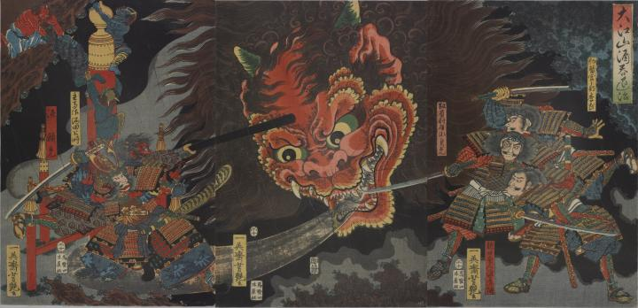

鬼；オニ，酒呑童子；シュテンドウジ

源頼光らが、酒呑童子の大首と対峙している。酒呑童子の頭は赤く、人の背丈に倍する大きさである。2本の角、鋭い牙が生えている。耳まで裂け、大きく開いた口からは、黒い霧状のものを吐き出している。後ろでは、4体の鬼が逃げだそうとしている。
著作者：一栄斎芳艶（歌川芳艶）／出典：親書誌：U426_nichibunken_0084：大江山酒呑退治；オオエヤマシュテンタイジ／日付：2006／資源識別子：U426_nichibunken_0084_0001_0000
Copyright (c)2010- International Research Center for Japanese Studies, Kyoto, Japan. All rights reserved.